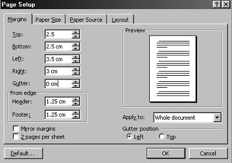
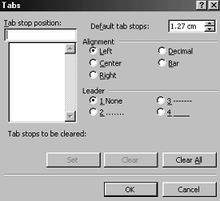

Free
computer Tutorials
|
Free
computer Tutorials
|
|
 home home |
|
||||
Creating Multi-Page Documents in Microsoft WordIn this section, you're going to create a document with more than one page. You'll learn how to insert a file into your Word document. You'll add a header and footer to your document, and put some page numbers at the bottom. You'll also learn about Page Preview. First, there is a file you need for this section. It's is a plain text file. Instead of left clicking the link below, click on the link with your right mouse button. From the menu, Choose either "Save Targe As" (Internet Explorer), or "Save Link As" (Firefox/Netscape). Save it to your own hard drive. Make a note of the location where the file is being saved to. Here's the file, then: Right Click here to save the file you need for this section So, off we go. Let's see how to insert this text file into a Word document. Open a new Microsoft Word Document. If you already have Word opened, you can click on File in the menu bar. From the drop down menu, select New. From the dialogue box that appears, choose Blank Document. Before we insert the text file, we can set up our margins and tabs. To set the margins for the entire document, do the following:
 The values to set are these:
When you're done, click OK. You will be returned to your blank page. We're going to set up a Tab Stop for the first line of each paragraph. We can then indent by pressing the Tab key on the keyboard. To set a Tab stop, do the following:
 We're going to change the Default tab stop. A default is a number that is built into the programme. If you look at the top right of the Tabs dialogue box you'll see the figure of 1.27 cm for the "Default tab stops". This default number will be the same for everybody with the same version of Microsoft Word. You can, of course, change it. But what you are changing here is the size of the jump that the cursor makes when you press the Tab key on your keyboard. So with the cursor blinking on the first line, when you press the tab key, your cursor will jump 1.27 centimetres.
All right, time to insert the text file. We'll do that on the next page.
Move on to the next part of the tutorial --> |
|||||
|